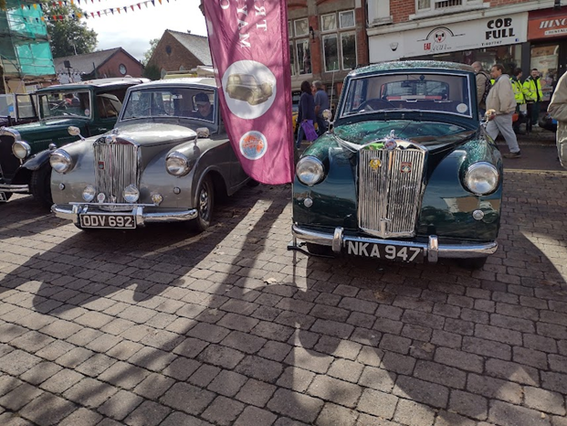

<link href="{{ site.baseurl }}/events/article.css" rel="stylesheet" type="text/css">
<main>
    <article>
        <ol id="breadcrumb">
            <li>
                <a href="{{ site.baseurl }}/">Home</a>
            </li>
            <li>
                <a href="{{ site.baseurl }}/events">Events</a>
            </li>
            <li>
                <a href="{{ site.baseurl }}/events/local">Local</a>
            </li>
            <li>Vehicles in the Park 2021</li>
        </ol>
        <div id="content">
            <h1>Vehicles in the Park, Enderby</h1>
            <h2>18<sup>th</sup> September 2021</h2>
            <h3>Report by Paul Burgess</h3>
            
            <p>Photo of Paul Burgess’s (NKA 947) and John Castle’s (ODV 692) Mayflowers at ‘Vehicles in the Park’ in Enderby, Leicestershire on Saturday 18<sup>th</sup> September 2021.</p>
        </div>
    </article>
    <aside>
        <h2>Members’ cars in attendance</h2>
        <ul class="disableListStyles">
            <li>
                <h3>Paul Burgess</h3>
                <div>
                    <div class="numberPlateMarker">NKA 947</div>
                </div>
            </li>
            <li>
                <h3>John Castle</h3>
                <div>
                    <div class="numberPlateMarker">ODV 692</div>
                </div>
            </li>
        </ul>
    </aside>
</main>
